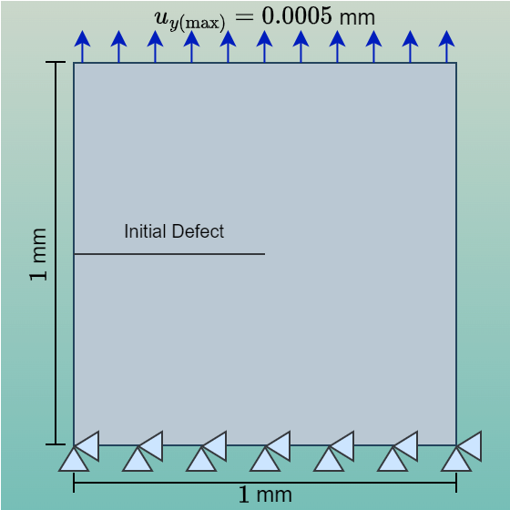

Single Edge-Notch Tension (SENT) Fatigue Analysis
A 1 mm \(\times\) 1 mm Single Edge-Notch Tension fatigue test is set up on this page. The objectives are:
- Demonstrate Felino's ability to reproduce fatigue-driven crack patterns.
- Compare results under different fatigue-energy accumulation schemes.
Material parameters and boundary conditions

| Parameters | Values |
|---|---|
| Young's Modulus \(E\) | 210,000 MPa |
| Poisson's Ratio \(\nu\) | 0.3 |
| Critical Energy Release Rate \(G_c\) | 2.7 kJ/m\(^2\)·mm |
| Crack Band Width \(l\) | 0.016 mm |
| Crack Geometric Function \(\alpha(d)\) | \(d\) |
| Normalization Coefficient \(c_0\) | 2.6666667 |
| Critical Fatigue Threshold \(\alpha_{\mathrm{critical}}\) | 62.5 MPa |
| Mean Load Fatigue Energy Parameters | \((R,n)=\)(0.5,0.5) |
| Fatigue Accumulation Mode | ICLA |
| Loading Period | 0.01 |
| Number of cycle | 38,000 |
Animation
Input Files
The input files of this tutorial are available:References
- Chou, Daniel T., and Roya Darabi. "Felino: A Modular Open-Access Software for High-Cycle Fatigue Simulation Via Phase-Field Methods." Available at SSRN 5291375 (2025).
- Azinpour, Erfan, et al. "High-cycle fatigue analysis of laser-based directed energy deposition maraging steels: Combined phase field and experimental studies." International Journal of Fatigue 198 (2025): 108970.